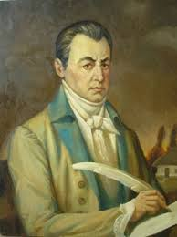
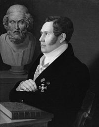

Уроки грецької
Античні поети або полтавські греки
У першій половині дев’ятнадцятого століття у Полтаві та навколо проявилася аномальна концентрація античних поетів:
Іван Котляревський видає «Енеїду» (перше видання в 1798 – повне в 1842 році),
Микола Гнідич у 1826 завершив переклад «Іліади»,
Василь Андрійович Жуковський – київський поміщик - автор класичного російського перекладу «Одіссеї» (1842—1846).
Микола Гоголь у 1842 видає поему «Мертві душі» у якій втаємничені літературознавці впізнають «Одіссею».
Совпадєніє? – не думаю :).
 Котляре́вський Іва́н Петро́вич (29 серпня (9 вересня) 1769, Полтава — 29 жовтня (10 листопада) 1838, Полтава) — український письменник, поет, драматург, основоположник сучасної української літератури, громадський діяч.
Підтримував зв'язки з декабристами. Його поема «Енеїда» (1798) стала першим в українській літературі твором, написаним народною мовою.
Котляревський зробив найвагоміший внесок у становлення сучасної української літературної мови. В умовах занепаду всіх різновидів староукраїнської писемної мови, його поема «Енеїда», п'єси «Наталка Полтавка» і «Москаль-чарівник», написані на основі живого усного мовлення народу, започаткували новий етап формування літературної мови.
Народився в Полтаві, нині Україна (тоді Полтавський полк Війська Запорозького, Гетьманщина під протекторатом Російської імперії) в сім'ї канцеляриста — шляхтича гербу Огоньчик[1][2].
Після навчання в Полтавській духовній семінарії (1789–1793), працював канцеляристом, у 1793–1796 роках — домашнім учителем у сільських поміщицьких родинах.
У 1796–1808 роках перебував на військовій службі в Сіверському карабінерському полку. У 1806–1807 роках Котляревський у військовому званні штабс-капітана брав участь у російсько-турецькій війні 1806—1812 років, був учасником облоги Ізмаїлу. У 1808 році вийшов у відставку з орденом Святої Анни 3-го ступеня.
З 1810 року працював наглядачем «Дому для виховання дітей бідних дворян».
У 1812 році, під час походу Наполеона I Бонапарта на Росію, Котляревський, за сприяння малоросійського генерал-губернатора Якова Лобанова-Ростовського, який отримав відповідний наказ від імператора, сформував у містечку Горошині Хорольського повіту на Полтавщині 5-й український козацький полк (за умови, що полк буде збережено після закінчення війни, як постійне козацьке військо), за що отримав військовий чин майора.
У 1816–1821 роках — директор Полтавського вільного театру.
У 1818 році разом з Василем Лукашевичем, Володимиром Тарновським та іншими входив до складу полтавської масонської ложі «Любов до істини». Член Вільного товариства любителів російської словесності з 1821 року. За свідченнями декабриста Матвія Муравйова-Апостола, які він дав під час слідства у справі декабристів, член Малоросійського таємного товариства[3]. Слідчий комітет залишив це без уваги.
Котляревський сприяв у 1822 році викупові з кріпацтва українського і російського актора Михайла Щепкіна.
У 1827–1835 роках — попечитель «богоугодних» закладів.
Помер 29 жовтня (10 листопада) 1838 року у віці 69 років. Похований у Полтаві (на час смерті Полтавська губернія, Російська імперія).
 Гнідич Микола Іванович (по отриманні дворянства Гнедич) (*2 (13) лютого 1784, Полтава, Російська імперія — †3 (15) лютого 1833, Москва, Російська імперія) — російський письменник і вчений українського походження, член Російської академії (від 1811-го), член-кореспондент імператорської АН (від 1826-го), театральний діяч, статський радник (від 1828-го). Кавалер кількох орденів.
Походив з козацького роду Гнідичів — онук котелевського сотника Петра Гнідича, син власника невеликого маєтку в Богодухівському повіті (нині Котелевського району Полтавської області).
Народився в Полтаві. Мати померла при пологах, а батько — коли Микола був дитиною. Захворівши в дитинстві на віспу, втратив праве око.
З 1793 навчався у місцевій Слов'янській семінарії, згодом у Харківському колегіумі, з 1800 у Москві, в благородному університетському пансіоні МДУ, невдовзі в університеті, котрий полишив 30 грудня 1802 (11 січня 1803) через нестачу коштів на навчання, з атестатом що давав йому змогу стати на службу колезьким реєстратором.
Цікавився літературою, писав власні вірші і перекладав твори інших письменників. Віршував російською і українською мовами. Дебютував у літературі, надрукувавши 1802-го свій переклад із трагедії Жана Франсуа Дюсі[fr]. Перекладав твори В. Шекспіра, Вольтера, Ж. Расіна, Ф. Шіллера та інших авторів.
З часом став відомим в літературних колах Санкт-Петербургу, що дозволило познайомитися з графом Строгановим, тогочасним директором Імператорської бібліотеки та з Оленіним — першим помічником графа в бібліотечних справах.
Змінивши місце проживання в 1803 на Петербург, обіймав дрібні посади у різних відомствах, зокрема департаменті народної освіти, канцелярії Державної ради.
У 1805-1810 перебував на батьківщині, під час відвідин подарував власний маєток сестрі Галині. З 1811, за сприяння Оленіна, перейшов на службу до Імператорської публічної бібліотеки.
Працював над статтями з історії України, сюжетами про князів Київської Русі, звертав особливу увагу на кобзарів. Планував укласти академічний «Словарь малороссийского языка».
Серед товарищів були Глинка Федір Миколайович, Юшневський Олексій Петрович, Жуковський Василь Андрійович, Муравйов Михайло Артемович, Крилов Іван Андрійович, Батюшков Костянтин Миколайович, Рилєєв Кіндрат Федорович.
Видав поеми Олександра Пушкіна «Руслан и Людмила» (1820) і «Кавказский пленник» (1822).
У 1826 закінчив переклад російською мовою «Іліади» Гомера, підготував до видання наукові коментарі. Через хворобу в 1827 залишив канцелярську службу. До 1828 перебував у Одесі. У 1831 звільнився з бібліотеки (зі збереженням чину та грошового утримання). Видав зібрання власних творів «Стихотворения Н. Гнедича» (СПб., 1832).
Помер в Москві, під час курсу лікування, 15 лютого 1833. Тіло перевезене до Петербургу. Похований в Олександро-Невській лаврі.
Особисту книгозбірню (понад 1250 томів) заповів Полтавській гімназії, 2000 карбованців — церкві у Бригадирівці.